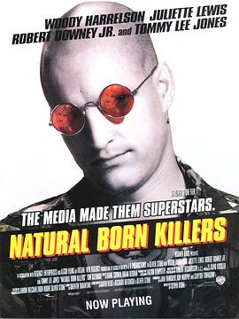

天生杀人狂 / Natural Born Killers
又名：天生狂徒 / 闪灵杀手 / 天生杀手
三星半。好像是挺牛逼的，但感觉片子处理得太过了，看了一个小时之后就有点烦
作品信息
| 导演 | 奥利佛·斯通 |
| 编剧 | 昆汀·塔伦蒂诺 / 戴维·韦罗兹 / 理查德·鲁托夫斯基 / 奥利佛·斯通 |
| 主演 | 伍迪·哈里森 / 朱丽叶特·刘易斯 / 小罗伯特·唐尼 / 汤姆·塞兹摩尔 / 鲁德尼·丹泽菲尔德 / 埃弗里特·昆顿 / 杰瑞德·哈里斯 / 普路特·泰勒·文斯 / 伊迪·麦克勒格 / 拉塞尔·敏斯 / 兰尼·弗拉哈迪 / 澳澜·琼斯 / 柯克·鲍兹 / Ed White / Terrylene / 玛丽亚·皮提罗 / 乔什·里奇曼 / 西恩·斯通 / 梅林达·雷纳 / 科琳娜·埃弗森 / 代尔·戴 / Edward Conna / 伊万·汉德勒 / 马修·法伯 / 杰米·哈罗德 / Jake Grace / 萨尔瓦托雷·哈雷布 / 巴萨扎·盖提 / Sally Jackson / 菲尔·尼尔森 / 耶利米·比特绥 / 汤米·李·琼斯 / 陈英明 / 史蒂夫·赖特 / 约翰·M·沃森 / 乔·格里法西 / 道格拉斯·克罗斯比 / 卡尔·西阿法里奥 / 马绍尔·贝尔 / 路易斯·隆巴迪 / 艾什莉·贾德 / 大卫·保罗 / 彼得·保罗 / 雷切尔·蒂科汀 / Chris Chavis / 汉克·科温 / 赫伯特·W·吉恩斯 / 詹姆斯·盖蒙 / 丹尼·高德林 / Jane Hamsher / Barry Hardy / 马克·哈蒙 / 艾利斯·霍华德 / 波利斯·卡洛夫 / 凯茜·朗 / 大卫·帕斯奎斯 / 理查德·鲁托夫斯基 / O·J·辛普森 / Kevin Watson |
| 类型 | 剧情 / 动作 / 犯罪 |
| 制片国家/地区 | 美国 |
| 语言 | 英语 / 纳瓦霍语 / 日语 |
| 上映日期 | 1994-08-26(美国) |
| 片长 | 118分钟 / 122分钟(导演剪辑版) |
| IMDb | tt0110632 |
最后一次看到是 2026-08-12T21:13:01+08:00 · 豆瓣原页